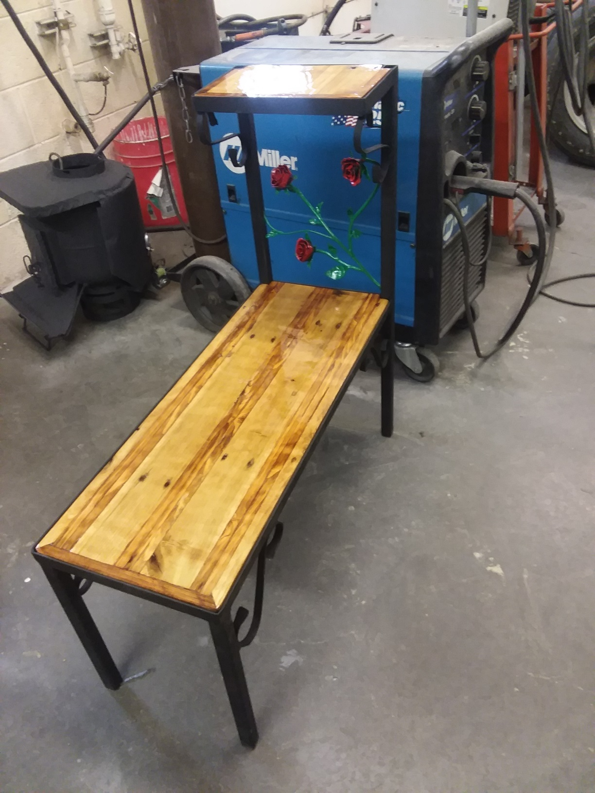

At Crane Fab, we turn raw metal into art. Our custom metal fabrication service focuses on crafting one-of-a-kind, handmade pieces from ornamental iron, repurposed materials, and scrap metals already on hand. Each build is shaped by creativity and craftsmanship — no two projects are ever the same.
From decorative brackets and furniture accents to wall art and small structural builds, every piece we create reflects the character and style that define Crane Fab. We take pride in giving new life to existing materials, transforming them into something bold, functional, and truly unique.
Looking for ideas? Visit our Gallery to explore completed projects and spark inspiration for your own custom piece.
Every piece tells a story — Where Passion becomes Reality
Metal + Wood Integration

we specialize in bringing two timeless materials together — metal and wood — to create pieces that balance strength with natural warmth. Each project is handcrafted, combining steel, iron, or aluminum with solid wood to form unique works that highlight the best qualities of both materials.
Whether it’s a custom table frame, shelving unit, countertop support, or decorative installation, our builds focus on clean lines, solid structure, and thoughtful design. Every joint, weld, and finish is handled in-house, ensuring a seamless blend between rugged metalwork and finely finished woodgrain.
We often use reclaimed or repurposed materials, giving each project a story and a sense of character that can’t be replicated. From rustic to modern, every piece is designed to complement your space and showcase true craftsmanship.
Looking for ideas? Browse our Gallery to see past creations and discover what’s possible when metal meets wood.
Built to stand out — where raw steel meets natural grain.
Classic Parts Inventory
We maintains a carefully curated collection of classic and vintage vehicle parts, sourced from past restorations and project builds. Our inventory includes original components, salvaged pieces, and cleaned, ready-to-use parts from a wide range of older makes and models.
Each item we offer has been inspected and organized for builders, restorers, and collectors who appreciate authentic materials and hard-to-find components. Because our collection is built from real projects, the inventory is always changing — once a part is gone, it’s gone.
We value the history behind every piece and aim to give quality parts a second life instead of letting them go to waste. From trim and brackets to suspension pieces and interior hardware, every find has its own story.
Looking for something specific or inspiration for your next restoration? Browse our Classic Parts Inventory to see what’s currently available.